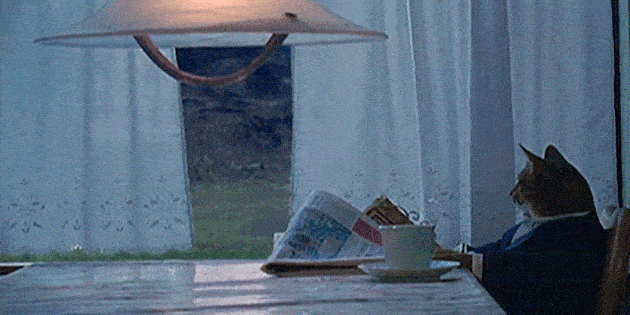
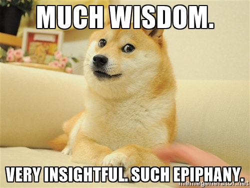

Blog
Why I'm taking a deep dive into web development

▶ Please note: There is a long version and a TL;DR version. If you're looking at this wall of text and thinking, "Just get to the point already!" then I suggest clicking the TL;DR tab below.
When I finally settled on a major in college, I chose journalism. It had the allure of research, of discovery, of narrating history as it happens. And although my studies covered the three major mediums of the day — television, radio and newspaper — I threw all of my effort into print media. After all, I was a firm believer in "the power of the pen," something I had heard when I was a kid and that had stuck with me through my teenage years as I read all the banned books I could get my hands on. Now, after working in newspapers for nearly 10 years and in every capacity, from writing to copy editing, designing to managing, and even crossing the barrier between the editorial and advertising sides a couple times (editorial is truly where it's at), I consider myself well-versed in newspapers as a whole.
There is one question that remains unanswered, though, even by the pros:
Where will newspapers stand in our ever-growing digital future?
There are arguments to be made from an optimist's viewpoint as well as a pessimist's (both of which I identify with), but the realist's stance is that print media — not just newspapers — is expensive to produce, only allows a finite amount of content, and it lacks the immediate sharing of information that consumers expect of their media today.
When this question first hit me, to be honest, it felt a bit like an existential crisis. After all, I had worked hard to lay the groundwork for a career in newspapers, which was a big part of my identity, but I couldn’t ignore the writing on the wall.
Now, I must emphasize that I'm not saying the future of journalism looks bleak — quite the contrary, I strongly believe in the importance of the press, and the strength behind "the power of the pen" still applies. I am more optimistic about journalism than I am about most things in society.
But looking back again at how my love for journalism grew, it actually began online. My best friend in junior high had introduced me to Live Journal, but because we believed we were rebels, we ditched Live Journal for Dead Journal. For a lot of people in my morgue (a.k.a. friends list), Dead Journal was basically what Tumblr is today — pretty pictures, sad poetry, a dash of social justice outrage, diary entries. My own Dead Journal included those things, too, but I had one more entry type: research.
Because my parents also believed I was a rebel, I spent a majority of my teenage years grounded, so I dedicated my free time to the internet. These were the days of dial-up, but lucky me, I had more free time than I knew what to do with! So I researched. I learned the difference between the Google and Yahoo! search engines (an index and a directory, respectively), and I used them each to their full advantage. Then, I'd basically write a report on the topic I had researched and publish it on my Dead Journal. I loved it.
Eventually, I wasn't satisfied with this hobby unless I could better the presentation of my content. Again with the search engines, I learned how to write the tags for embedding pictures and formatting fonts. Somehow, I even got into the actual code for my entire Dead Journal and learned how to change the background, add borders and colors, and even create custom sections. This is how I learned HTML and basic in-line CSS.
The same happened when I switched to MySpace, and again when I switched to Blogger. When I switched to Facebook and learned they don't allow that kind of customization, I was incensed and swore I'd never use Facebook (oh, how times have changed!).
Throughout all of this, even though I didn't fully realize the importance at the time, I had learned some valuable coding skills — literally valuable, since I was selling my Dead Journal/MySpace customization skills for $10 each job.
Fast forward to college, when I was toward the end of my degree program. I had been working as the editor of the student newspaper, and I successfully managed the full redesign and development of our newspaper's website so that we could include the television and radio programs along with our news stories — a full integration of the entire mass media department. Digital media was bringing everything together, and it felt new and exciting. I still favored print because I enjoyed being able to hold it in my hands and carry it around with me (no, we didn't have smartphones back then), but I loved the immediacy of being able to share the campus news with my parents via email instead of bringing newspapers home with me on break.
Oh, and analytics. Oh, the analytics! I spent hours combing through the charts, the stats, the numbers of who visited our website, what they looked at, how long they stayed. It was so much more interesting than counting the leftover newspapers at the end of each week and basing our readership numbers on estimations of how many picked-up newspapers actually got read.
Because I viewed digital media as a mirror — an extension — of print media, I began to take coding more seriously. I took the only two website-related classes offered in my program — one for learning Dreamweaver, and one for just learning how to design a website that was like an early version of UI design, no coding required. That was all my university offered unless I wanted to change my major to computer science, something I wasn't about to do. So instead, I took matters into my own hands and started with the ins and outs of Wordpress, which gave me a lot of practice with CSS and a bit of dabbling with JavaScript and PHP, all of which I enjoyed and was happy to pull all-nighters in order to figure out how to do what I wanted to be done.
Here's the thing, though: Coding was a hobby of mine, one I could eventually convince people to pay me for as a freelancer, but it had to take a backseat to my newspaper career. And as I realized that newspapers were struggling in the age of digital media and the salary freezes were to continue indefinitely, and as I watched copy desks and advertising design departments get laid off, and as I learned that those jobs were getting outsourced, and as I saw my student loan interest rates keep going up while my monthly payments never even touched the principal, one thought became all-consuming: I've got to get out of here.
So I quickly earned a TEFL certificate and took off for Asia, as far away as I could get. I taught English in South Korea, went backpacking through South East Asia, traveled around Japan, and generally just got my space from the real world. I continued freelancing while abroad, using my coding skills to build a few websites for businesses and help manage a website for an expat publication. When I returned to the U.S. about two and a half years later, I briefly considered breaking into a journalism-related field, like marketing or graphic design, but after thinking long and hard, the obvious answer suddenly became very clear: I should give web development a serious try.
It was the end of 2016 when I made the decision to jump head first into programming. I decided that I'd go back to my roots of spending my free time researching and tinkering with code, and I'd put serious effort into gaining the front-end and back-end development skills that are in such high demand today and, more than ever, in the future. Since learning is my number one strength, I had no doubt that I could become a competent developer. Attending a Try Coding weekend at Turing School only cemented my desire (seriously, JavaScript and Ruby are so much fun!).
So here I am, back to working my tail off in the newspaper industry while spending all of my free time coding, and I'm loving every second of both. Leaving my current newspaper job will be a bittersweet moment for me, but I look forward to a challenging, engaging, growing career in coding, which I believe will be my ticket to learning something new every day as well as freeing up my personal time to indulge in a new hobby — publishing a zine (because I can't not have print media in my life). Oh, and paying off those pesky student loans, of course. If you read this far, thank you so much!
I dedicated my college degree and professional career to newspapers. Digital media eventually entered the picture, first as a friend, then as a print industry destroyer. Because coding has been a hobby of mine since I was a teenager, as well as a reliable source of freelance income, I've decided to make a career change to web development. To do this, I dedicated all of 2017 to seriously studying both front-end and back-end programming, specifically JavaScript and Ruby, and I'm now continuing that path into 2018. It's fun, and I love it. P.S. Here's a doggo on a computer.
UPDATE
As of February 2018, my career change is complete! I didn't mention it in the post, but I had enrolled in a year-long, mentor-led web development bootcamp through Bloc, and on the same day that I graduated, I got a job offer! I believe my success all came down to my dedication and willingness to step outside my comfort zone mixed with my Bloc mentor's excellent advice about how to approach the job search. I've also been really passionate about stepping into the local tech community and building up others who want to make their own career changes.
If you have any questions about how I made a career change into tech, or if you're interested in enrolling with Bloc (I can give you a $500 referral discount), please don't hesitate to find me on Twitter and send a message.